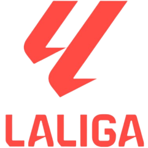
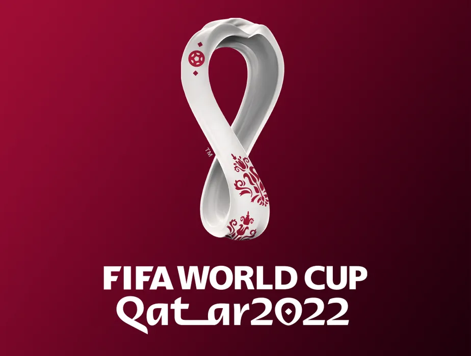
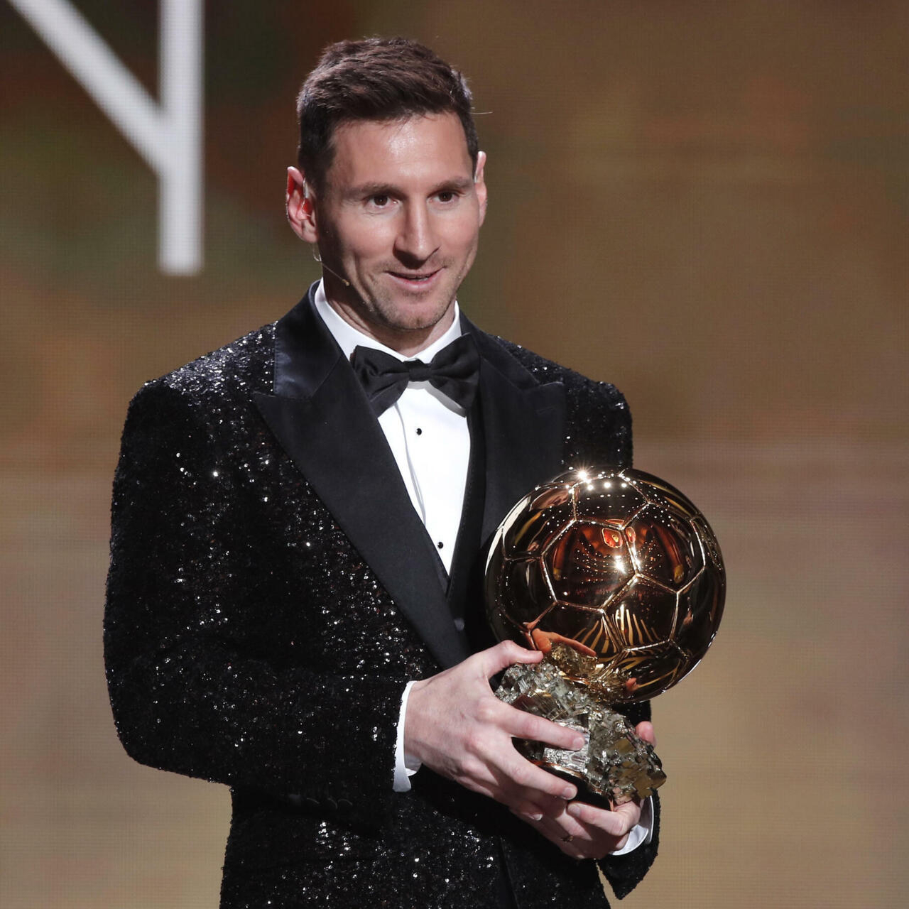
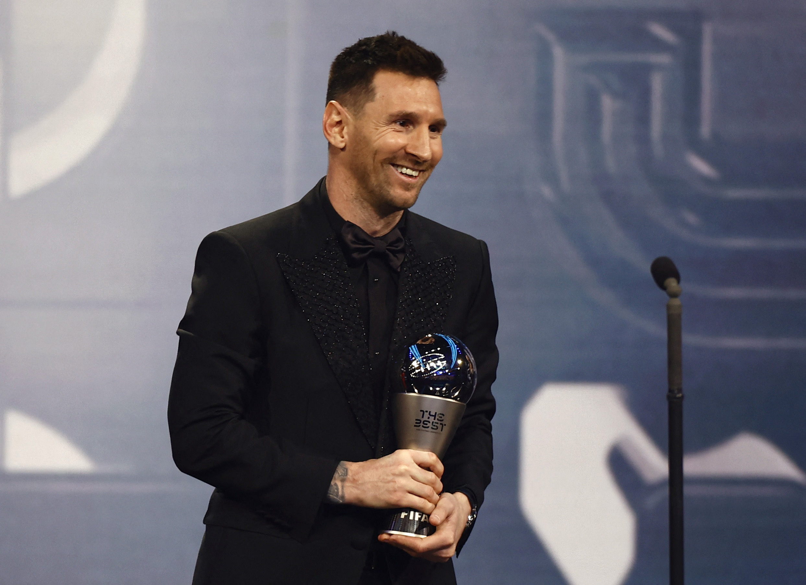
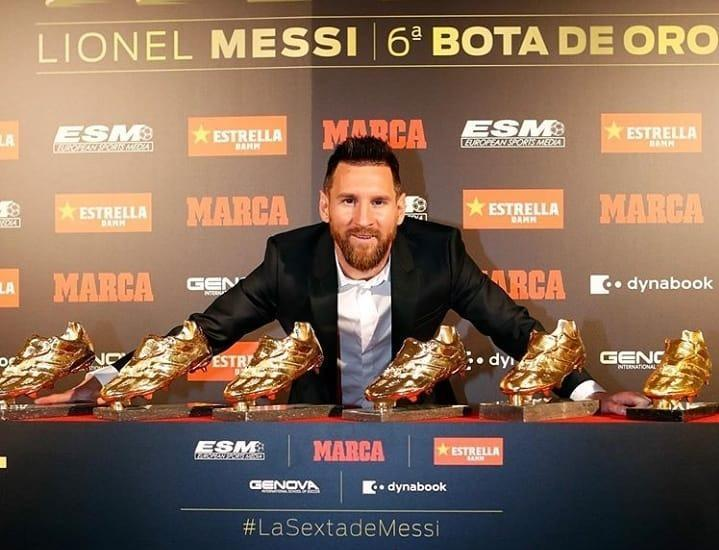
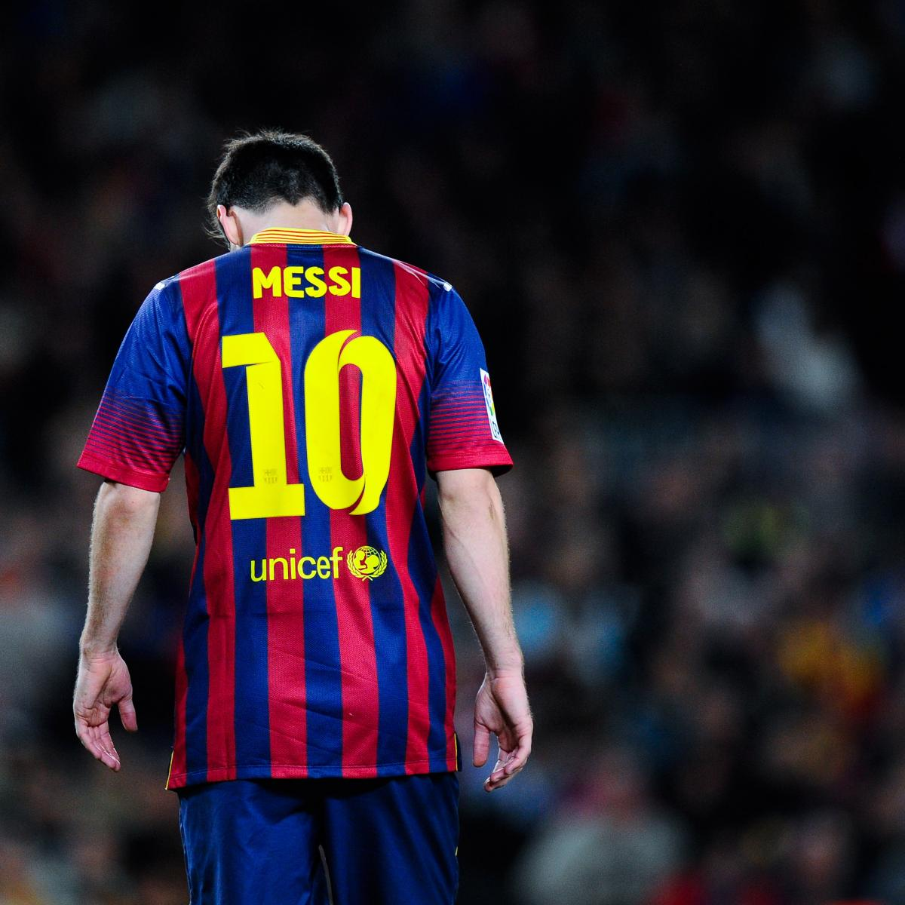
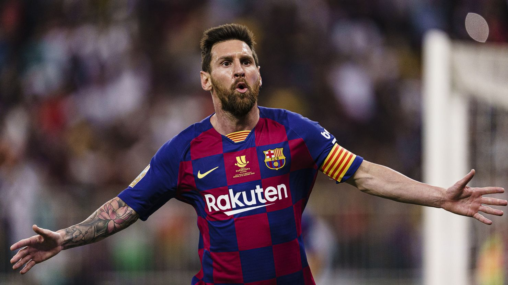
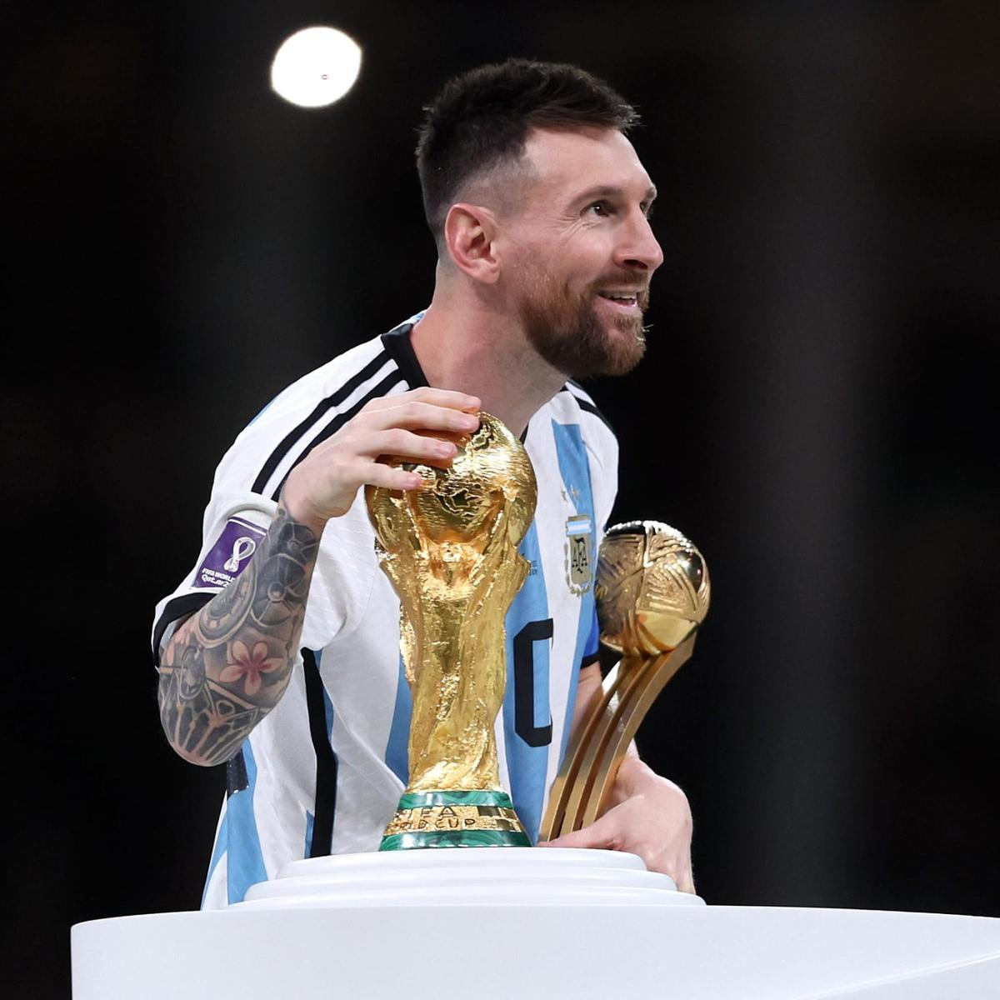
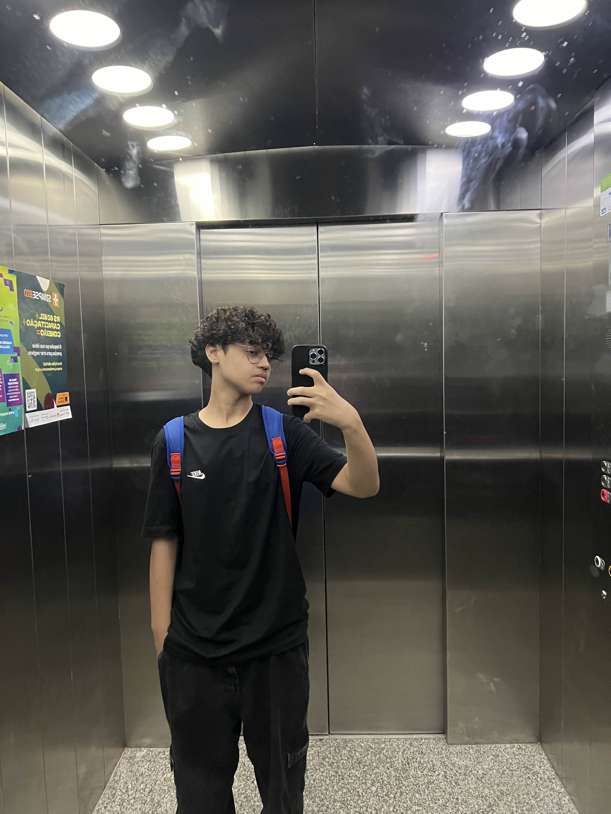

Biografia do Messi
Sobre
Nesse post, iremos relatar pontos importantes de sua vida
Sumário
História
Campeonatos
Prêmios
Lionel Messi hoje
História
Lionel Messi é um dos maiores jogadores de futebol da história. Nascido em 24 de junho de 1987 em Rosario, Argentina, Messi demonstrou um talento excepcional para
o futebol desde muito jovem. Ele se juntou ao Newell's Old Boys, um clube local, onde rapidamente se destacou.
Com 13 anos, Messi se mudou para Barcelona, Espanha, após o FC Barcelona oferecer-se para cobrir os custos do tratamento médico necessário para tratar uma condição
de crescimento que ele tinha. Ele ingressou na famosa La Masia, a academia de jovens talentos do clube.
Messi fez sua estreia profissional pelo Barcelona em 2004, aos 17 anos. Desde então, ele construiu uma carreira impressionante com o clube, ganhando múltiplos títulos
da La Liga e da UEFA Champions League, e quebrando inúmeros recordes. Entre eles, ele se tornou o maior artilheiro da história do clube e da La Liga. Seus talentos
também lhe renderam vários prêmios Ballon d'Or, que são dados ao melhor jogador do mundo.
Em 2021, Messi deixou o Barcelona devido a problemas financeiros do clube e assinou com o Paris Saint-Germain (PSG). Com o PSG, continuou a mostrar sua
habilidade e contribuir significativamente para o sucesso da equipe.
No cenário internacional, Messi teve uma carreira notável com a seleção argentina. Após uma série de decepções em finais, ele finalmente conquistou a
Copa América em 2021, um triunfo importante para ele e para o futebol argentino. Messi também levou a Argentina à vitória na Copa do Mundo de 2022,
consolidando ainda mais seu legado como um dos maiores jogadores de todos os tempos.
A habilidade técnica, a visão de jogo e a consistência de Messi ao longo dos anos o tornaram uma lenda viva no futebol, e sua história continua a inspirar
fãs e jogadores ao redor do mundo.
Campeonatos
La Liga

Campeonatos Conquistados: 10 (2005–06, 2008–09, 2009–10, 2010–11, 2012–13, 2014–15, 2015–16, 2017–18, 2018–19, 2022–23)
Descrição: O Campeonato Espanhol, ou La Liga, é a principal competição de clubes da Espanha. Messi, jogando pelo FC Barcelona, dominou a liga durante
sua estadia no clube, estabelecendo-se como o maior artilheiro da competição e contribuindo significativamente para o sucesso do Barcelona na Espanha.
UEFA Champions League

Campeonatos Conquistados: 4 (2005–06, 2008–09, 2010–11, 2014–15)
Descrição: A principal competição de clubes da Europa, a UEFA Champions League, é considerada o topo do futebol de clubes. Messi foi uma figura central
nos triunfos do Barcelona, destacando-se com atuações excepcionais e gols memoráveis, incluindo uma final notável contra o Manchester United em 2009 e 2011.
Copa do Mundo

Campeonatos Conquistados: 1 (2022)
Descrição: A Copa do Mundo da FIFA é o torneio mais prestigioso do futebol internacional. Messi conquistou o título em 2022, no Qatar, em uma competição memorável
onde foi um dos destaques, liderando a Argentina a uma vitória emocionante sobre a França na final.
Prêmios
Ballon d'Or

Premiações: 7 (2009, 2010, 2011, 2012, 2015, 2019, 2021)
Descrição: O Ballon d'Or é um dos prêmios mais prestigiados do futebol, concedido ao melhor jogador do mundo com base em votos de jornalistas
especializados. Messi detém o recorde de mais conquistas deste prêmio.
FIFA The Best Player

Premiações: 2 (2019, 2022)
Descrição: Este prêmio é concedido pela FIFA ao melhor jogador do mundo, eleito por treinadores, capitães de seleções e jornalistas. Messi foi
reconhecido com este prêmio em duas ocasiões.
Chuteira de Ouro

Premiações: 6 (2010, 2012, 2013, 2017, 2018, 2019)
Descrição: A Chuteira de Ouro é concedida ao artilheiro das ligas nacionais europeias. Messi é o jogador que mais vezes ganhou este prêmio,
destacando-se como o principal artilheiro das ligas europeias.
Messi hoje
Em agosto de 2024, Lionel Messi está jogando pelo Inter Miami CF, um clube da Major League Soccer (MLS), dos Estados Unidos. Ele se juntou ao Inter Miami em julho de 2023, após deixar o Paris Saint-Germain (PSG).
Carreira Atual:
Inter Miami CF (2023–Presente)
Chegada: Messi assinou com o Inter Miami CF em julho de 2023, marcando o início de sua carreira na MLS.
Desempenho: Desde sua chegada, Messi rapidamente se destacou no futebol americano, contribuindo com gols e assistências importantes. Sua presença elevou o perfil da liga e trouxe um grande impulso ao clube.
Conquistas: Em sua primeira temporada com o Inter Miami, Messi teve um impacto significativo, ajudando a equipe a conquistar a Leagues Cup, um torneio entre clubes da MLS e da Liga MX (México).
Galeria de Fotos



Por: Cauê Barroso , Gabriel Góes , Eduardo Rodrigues(SUB A)
